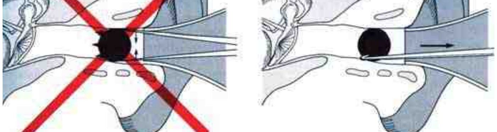
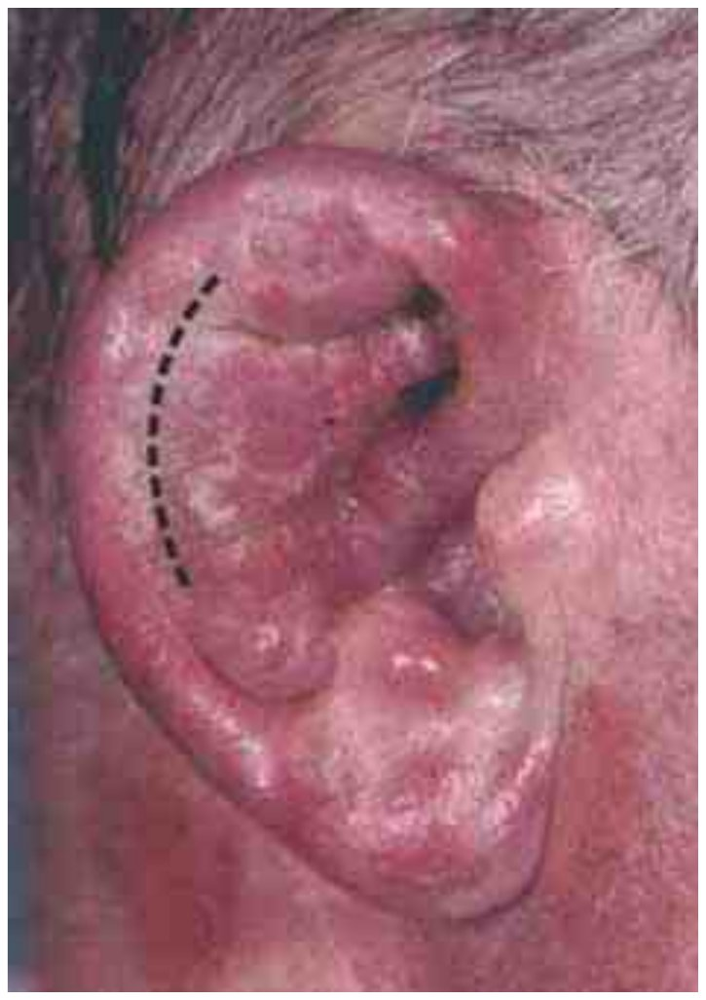
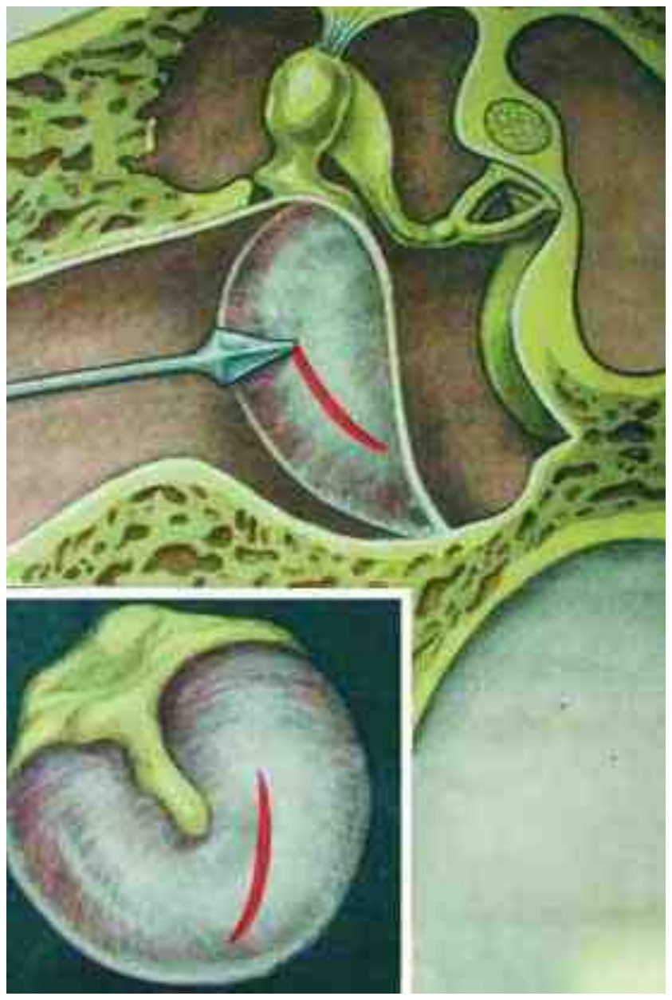
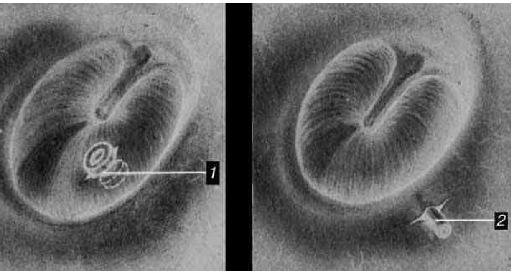
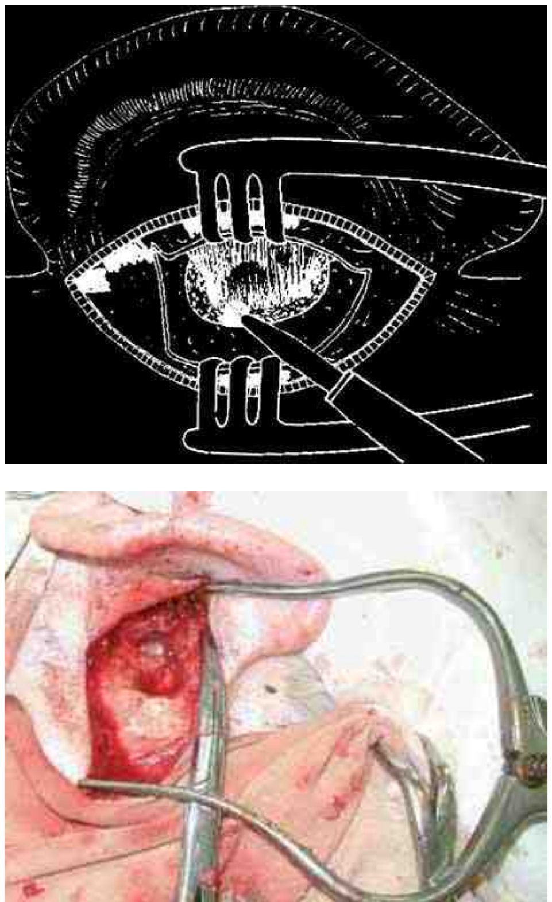
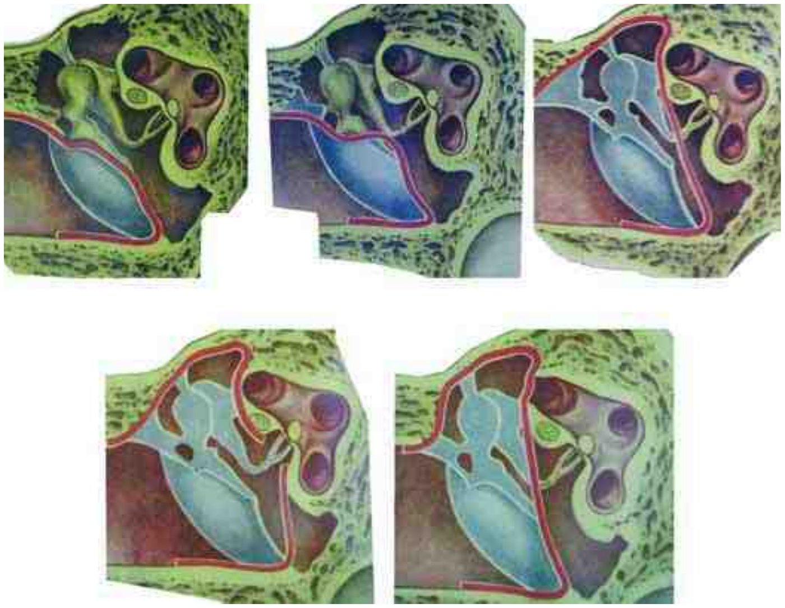
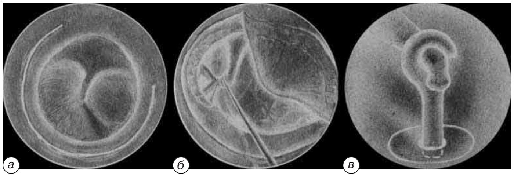
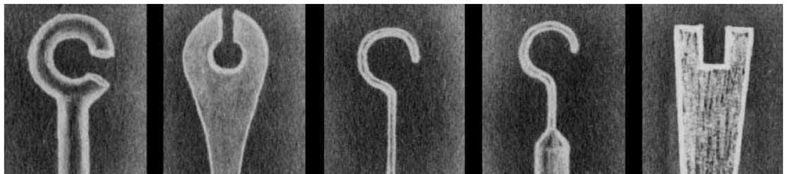
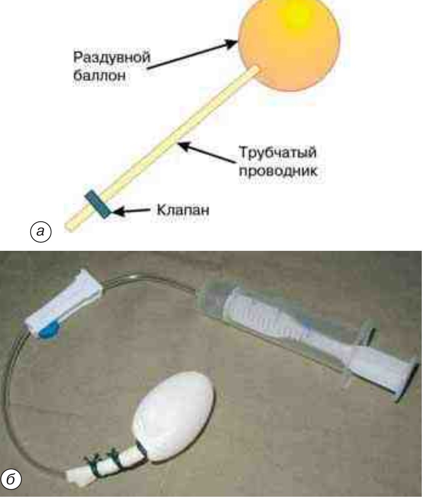

Операции на ухе
Удаление инородных тел наружного слухового прохода
Инородное тело, даже длительно находящееся в наружном слуховом проходе, как правило, не представляет опасности и нередко не вызывает выраженных жалоб. Значительно больший вред приносят попытки извлечь его пинцетом, зондом, щипцами или подручными предметами. При этом ранятся стенки слухового прохода, а инородное тело смещается из хрящевого отдела вглубь, за физиологическое сужение (isthmus), откуда удалить его труднее. Возможны и более тяжёлые последствия: разрыв барабанной перепонки с проникновением инородного тела в барабанную полость и развитием отита, вывих слуховых косточек, ранение лицевого нерва.

Методом выбора является промывание уха тёплой водой из шприца Жане; иногда воду нагнетают со значительной силой. Как и при удалении серной пробки, промывание противопоказано при сухой перфорации барабанной перепонки. Способные набухать инородные тела (горох, бобы) перед промыванием сморщивают спиртовыми каплями, влитыми в ухо. Если инородное тело полностью обтурирует слуховой проход, промывание невозможно: вода не проникает за него и обратная струя не возникает.
Инструментальное удаление выполняет опытный оториноларинголог, чаще тупым крючком, который под контролем зрения заводят за инородное тело. Манипуляции в глубине слухового прохода весьма болезненны, особенно при воспалительных изменениях, поэтому у детей, а в ряде случаев и у взрослых их проводят под наркозом.
Если через слуховой проход извлечь инородное тело не удаётся, используют наружный доступ. Заушным разрезом по переходной складке обнажают заднюю стенку костного отдела слухового прохода и удаляют инородное тело тем же изогнутым крючком или ушными щипцами. При затруднениях просвет прохода расширяют, снося костную пластинку с его задней стенки. В исключительных случаях, когда инородное тело находится в барабанной полости, приходится удалять всю заднюю стенку слухового прохода.
Вскрытие гематомы и абсцесса ушной раковины
Показанием служит скопление крови, а затем и гноя между хрящом и мягкими тканями ушной раковины, чаще всего посттравматического характера. В течение первых суток после травмы допустима пункция гематомы с аспирацией содержимого и наложением давящей повязки. В более поздние сроки эвакуировать гематому или абсцесс повторными пункциями, как правило, не удаётся, и эффективнее широкий разрез. Гнойный процесс очень быстро деформирует и расплавляет хрящ ушной раковины.
Обезболивание — местная инфильтрационная анестезия. Вкол лучше начинать от границы со здоровым участком и нагнетать анестетик до образования «лимонной корочки», не проваливаясь иглой в полость гематомы или абсцесса.
Острым скальпелем по наружной поверхности ушной раковины в месте наибольшего выбухания проводят разрез длиной около 1,5–2 см; сразу изливается скопившаяся кровь или гной. Полость обрабатывают 3% раствором перекиси водорода и промывают антисептиком, для оттока вводят резиновые дренирующие полоски. На раковину укладывают отжатые спиртовые тампоны, сверху накладывают давящую повязку. Перевязки при абсцессе выполняют ежедневно, при гематоме — через день. Назначается системная антибактериальная терапия.

Вскрытие фурункула наружного слухового прохода
Показанием является фурункул слухового прохода в стадии абсцедирования. Пациента беспокоит выраженная боль, усиливающаяся при пальпации козелка или заушной области, при разговоре и приёме пищи. При отоскопии просвет наружного слухового прохода сужен за счёт инфильтрации мягких тканей, на верхушке инфильтрата иногда определяется гнойное расплавление.
Обезболивание — местная инфильтрационная анестезия: тонкой иглой (инсулиновым шприцем) в основание гнойника вводят около 0,5–1 мл анестетика. Узким остроконечным скальпелем гнойник рассекают продольно, гнойный детрит удаляют острой ложкой, полость промывают перекисью водорода и антисептиками. При глубокой полости для дренирования вводят резиновую полоску. Назначается системная антибактериальная терапия.
Удаление экзостозов наружного слухового прохода
Экзостоз — доброкачественное костное новообразование наружного слухового прохода округлой формы на узком или широком основании, иногда множественное; он закрывает часть, а иногда и весь просвет слухового прохода. Показанием к удалению служит сужение или обтурация слухового прохода с нарушением слуха. Обезболивание — местная инфильтрационная анестезия или эндотрахеальный наркоз.
Небольшие экзостозы на ножке удаляют эндауральным доступом под операционным микроскопом. Кожу слухового прохода рассекают у основания экзостоза, микрораспатором отсепаровывают кожу нижней стенки, окаймляя образование, и сбивают экзостоз у основания желобоватым долотом. Кожу укладывают на место, в слуховой проход вводят узкую турунду с противовоспалительной мазью.
Глубоко расположенные экзостозы на широком основании лучше удалять заушным доступом. Разрез мягких тканей длиной около 4 см проводят в 0,5 см от переходной складки, обнажают площадку сосцевидного отростка и бережно отсепаровывают кожу задней стенки слухового прохода до экзостоза. Новообразование удаляют долотами или борами, при необходимости расширяя слуховой проход частичным удалением его задней костной стенки. Слуховой проход тампонируют турундой с противовоспалительной мазью.
Парацентез барабанной перепонки
Парацентез показан при затянувшейся доперфоративной стадии гнойного среднего отита с прогрессирующими клиническими проявлениями и при гематотимпануме. С диагностической и лечебной целью его выполняют при остром гнойном среднем отите в доперфоративной стадии, если у ребёнка или взрослого выражены интоксикация и менингеальные симптомы.
Обезболивание — аппликационная и инфильтрационная анестезия. После очистки наружного слухового прохода на 5–6 мин вводят турунду с раствором лидокаина 10%, тетракаина (дикаина) 3% или другого анестетика. Затем выполняют меатотимпанальную инъекцию: 1,0–2,0 мл 2% раствора лидокаина вводят под кожу задневерхней стенки наружного слухового прохода на границе перепончато-хрящевого и костного отделов.
Операцию выполняют в положении пациента сидя или лёжа; голову, руки и туловище обязательно жёстко фиксируют. Работают под контролем зрения, через ушную воронку наибольшего диаметра и под микроскопом. Барабанную перепонку рассекают через всю толщу в задненижнем квадранте. Глубина вкола не должна превышать 1,5–2 мм: при более глубоком введении иглы можно повредить слизистую оболочку промонториальной стенки. Разрез не располагают близко к краю наружного слухового прохода и к рукоятке молоточка; длина его составляет 3–4 мм.

После парацентеза в наружный слуховой проход вводят стерильную турунду и меняют её по мере пропитывания гнойным отделяемым.
Шунтирование барабанной полости
Шунтирование показано при экссудативном среднем отите, гематотимпануме и затянувшемся остром среднем отите на фоне дисфункции слуховой трубы. Наряду с клинической картиной решение об операции опирается на тимпанометрию: при выпоте в барабанной полости характерна тимпанограмма типа B.
Обезболивание — интубационный наркоз или местная инфильтрационная анестезия. Под операционным микроскопом в задненижнем квадранте барабанной перепонки выполняют разрез, как при парацентезе. В последние годы вместо разреза тонкой острой микроиглой раздвигают радиальные и продольные волокна барабанной перепонки. Через отверстие вводят шунт из биоинертного материала — тефлона, силикона, полиэтилена. Форма шунтов разнообразна: дренажные трубки с отверстиями, катушки и др.

В первые дни после операции через шунт промывают барабанную полость, эвакуируют содержимое, вводят лекарственные препараты. Дренаж, как правило, оставляют до выздоровления с восстановлением функции слуховой трубы — от нескольких недель до 1–2 лет. Шунт, введённый через разрез барабанной перепонки, нередко самопроизвольно выпадает, и его приходится вводить повторно.
Чрескожное (меатотимпанальное, или ретротимпанальное) шунтирование выполняют тонкой силиконовой дренажной трубкой диаметром примерно 0,5–0,8 мм, которую проводят под барабанным кольцом (annulus tympanicus), не травмируя барабанную перепонку. Под микроскопом длинной тонкой иглой вводят примерно 0,5–1 мл анестетика в задневерхний участок кожи наружного слухового прохода. Микроскальпелем рассекают кожу задней стенки до кости, отступив приблизительно 5 мм от барабанной перепонки, на протяжении «от 12 до 6 ч». Мелкими движениями микрораспатора отслаивают кожу к барабанной полости и выделяют меатальный лоскут вместе с барабанной перепонкой из барабанной вырезки, создавая сообщение с барабанной полостью. В образованный туннель вводят трубку так, чтобы загнутый в виде клюшки конец был направлен в нижние отделы барабанной полости; наружный конец фиксируют шёлковым швом к коже у входа в слуховой проход. Через трубку аспирируют секрет и вводят лекарственные препараты.
У части больных дренирование барабанной полости не приводит к выздоровлению. Причиной бывает распространение экссудативного воспаления на антрум и клетки сосцевидного отростка, иногда отграниченное блоком входа в сосцевидную пещеру. В этом случае выполняют антротомию с введением дренажной трубки в антрум на 2–4 нед. (антродренаж). Иногда одновременно проводят антротомию заушным доступом и интрамеатальную тимпанотомию: одну трубку вводят под меатотимпанальный лоскут на длительный срок, другую — в сосцевидную пещеру на 3–4 нед.
Антромастоидотомия
Антромастоидотомия показана как первый этап общеполостной операции при хроническом гнойном среднем отите, особенно у детей, при вялотекущем остром гнойном среднем отите, при мастоидите в случае неэффективности консервативного лечения, а также как этап тимпанопластики. Необходимым условием является ограниченный патологический процесс в сосцевидном отростке и пещере при отсутствии патологии в барабанной полости.
Обезболивание — эндотрахеальный наркоз, в некоторых случаях местная инфильтрационная анестезия.
Разрез мягких тканей проводят в 0,5 см от заушной складки — от верхнего края ушной раковины до верхушки сосцевидного отростка. Распатором отсепаровывают мягкие ткани вместе с надкостницей кверху до височной линии и книзу до верхушки отростка, тщательно обнажая задневерхний край слухового прохода. Края раны вместе с надкостницей разводят ранорасширителем Янсена и находят надпроходную ость (spina suprameatum).

Желобоватым долотом, держа его почти перпендикулярно, наносят две-три зарубки на кости чуть ниже височной линии (linea temporalis). Затем, располагая долото полого к поверхности кости, от области верхушки по направлению к зарубкам снимают кость тонкими слоями. Вскрывают периантральные клетки под кортикальным слоем, формируя широкую пологую воронку, обращённую верхушкой к антруму. Стенки вскрытых клеток по ходу операции ощупывают пуговчатым зондом. Антрум обнаруживается на глубине примерно 1,5–2 см от кортикального слоя.
На этом этапе необходимо учитывать ход лицевого нерва. Выйдя из пирамиды над верхним краем окна преддверия, он идёт кзади по нижней стенке входа в антрум (горизонтальное колено). Вблизи ампулы горизонтального полукружного канала нерв поворачивает книзу (вертикальное колено), проходит в основании задней костной стенки и выходит через шилососцевидное отверстие у переднего края верхушки сосцевидного отростка. Повреждение нерва приводит к стойкому параличу мимических мышц соответствующей половины лица.
Зондом определяют вход в пещеру, направленный к барабанной полости, костные навесы и участки деструкции; их удаляют, расширяя антрум. Далее последовательно вскрывают клетки по направлению к верхушке сосцевидного отростка, удаляют перифациальные и перисинуозные клетки, костные навесы и перемычки, очаги костной деструкции и грануляции до здоровой кости. Правильно вскрытый сосцевидный отросток представляет собой гладкую полость почкообразной формы, на дне которой располагается антрум, а сзади и снизу — костное возвышение сигмовидного синуса.
Операцию завершают одним из двух способов. В первом задняя костная стенка наружного слухового прохода сохраняется, рана остаётся открытой и тампонируется марлевой турундой с антибиотиком или мазью; в дальнейшем полость выполняется грануляциями, которые покрываются эпидермисом. Во втором заднюю костную стенку снимают до тонкой перемычки над входом в пещеру — «мостика». «Мостик» сохраняют и вместе с входом в пещеру со стороны мастоидальной полости покрывают П-образным меатотимпанальным лоскутом, затем выполняют нижнюю Г-образную пластику меатальным лоскутом и тампонируют рану мазевой турундой. Эпидермизация полости ускоряется, если уложить в неё пневмо- или гидротампон.
Санирующая общеполостная операция на височной кости
Операция показана при хроническом гнойном среднем отите. Её задачи — предупреждение внутричерепных и общих отогенных осложнений, сохранение и улучшение имеющегося слуха, подготовка условий для слухоулучшающей операции. Обезболивание — интубационный эндотрахеальный наркоз.
Принцип операции состоит в устранении очага инфекции в височной кости путём объединения трёх полостей: барабанной полости, сосцевидного отростка и слухового прохода. В зависимости от состояния слуховой трубы, звукопроводящей системы, слизистой оболочки барабанной полости, клеточной системы сосцевидного отростка, наличия холестеатомы выполняют разные модификации. Это общеполостная санирующая операция с тимпанопластикой или без неё и раздельная аттико-антротомия с сохранением задней стенки слухового прохода или с истончением её до «мостика». Если сохраняются остатки барабанной перепонки, слуховые косточки, слизистая оболочка барабанной полости и другие звукопроводящие структуры, операцию называют слухосохраняющей. Выбор метода у каждого больного решается индивидуально.
При кариозно-грануляционном процессе в аттико-антральной области, холестеатоме и во всех случаях неблагоприятного течения, в частности при повторяющемся гноетечении из уха, основным методом хирургического лечения хронического гнойного среднего отита является общеполостная санирующая слухосохраняющая операция.
Заушный разрез проводят в 0,5 см от заушной складки, отсепаровывают мягкие ткани с надкостницей на площадке сосцевидного отростка до надпроходной ости и отслаивают кожу задней и частично верхней стенок наружного слухового прохода до барабанного кольца (annulus tympanicus). Кость обрабатывают электрическими фрезами, используют также молоток и длинные долота с различной шириной режущего конца. Ориентирами служат: сверху — костный выступ височной линии, спереди — надпроходная ость, сзади — линия, ограничивающая сосцевидный отросток позади треугольной площадки. Выше височной линии и выше уровня верхней костной стенки слухового прохода располагается твёрдая мозговая оболочка, кзади от треугольной площадки — сигмовидный синус.
Бором или долотами снимают кортикальный слой, вскрывают периантральные, пороговые, перисинуозные, верхушечные и угловые клетки и антрум, удаляют кариозную кость до здоровой. На медиальной стенке входа в пещеру проходит лицевой нерв, кзади от него выступает горизонтальный полукружный канал, ниже которого продолжается канал лицевого нерва.
Заднюю стенку костной части слухового прохода осторожно снимают и постепенно истончают. Самая глубокая её часть, нависающая над входом в пещеру, называется «мостиком»; его высоту периодически контролируют пуговчатым зондом со стороны антрума. Истончённый до 2–3 мм «мостик» сбивают долотом по верхнему краю, поскольку на медиальной стенке входа в антрум лежат лицевой нерв, горизонтальный полукружный канал и тело наковальни. Оставшуюся «шпору» сглаживают плоскими узкими долотами до уровня горизонтального полукружного канала, который на дне антрума имеет вид беловатого возвышения. Снятие «мостика» и «шпоры» необходимо для детальной ревизии барабанного и тимпанального синусов, аттика и цепи слуховых косточек, особенно при подозрении на холестеатому. Чтобы не повредить и не сместить короткий отросток наковальни и её связки во входе в пещеру, этот и последующие этапы выполняют под операционным микроскопом с микроинструментарием.
Далее осматривают вход в пещеру, удаляют латеральную стенку аттика, проводят ревизию барабанной полости, удаляют грануляции, полипы, холестеатому. Слуховые косточки осторожно освобождают от грануляций, сохраняя функционирующие элементы звукопроведения и связочный аппарат. Даже кариозно изменённые косточки у подавляющего большинства больных участвуют в проведении звука. Поэтому при значимом для больного слухе авторы рекомендуют всегда сохранять слуховые косточки и барабанную перепонку или их остатки [Пальчун В. Т., 1994]. Отрицательных последствий это не несёт, что подтверждено наблюдением больных через десятки лет после операции.
Пластику наружного слухового прохода выполняют из кожи его задней стенки: её рассекают поперечно на границе с ушной раковиной у самых хрящей, затем продольно. При продольном разрезе по верхнему краю слухового прохода лоскут укладывают на нижний отдел трепанационной полости (нижний Г-образный лоскут).
Полость через слуховой проход тампонируют турундами с антисептиками на мазевой основе (левомеколь, диоксиколь, антибиотик с вазелином) или раздувным пневмобаллоном, на заушную рану накладывают швы и асептическую повязку. Первую перевязку со сменой тампонов выполняют на 3–4-е сутки, затем тампоны меняют каждые 2–3 дня, периодически оставляя полость открытой и орошая её антисептиками. После завершения эпидермизации всей полости (через 3–4 нед.) выделения из неё полностью прекращаются. Если эпидермизация задерживается из-за избыточного роста грануляций, их удаляют хирургическими ложками и кюретками, прижигают 30–40% раствором азотнокислого серебра или трихлоруксусной кислотой. В дальнейшем необходимо периодическое наблюдение за полостью, чтобы не пропустить накопление эпидермальных масс и рецидив гноетечения.
Среди консервативно-радикальных вариантов наиболее распространена раздельная аттико-антротомия. Её отличие состоит в сохранении задней костной стенки наружного слухового прохода или, в ряде случаев, костного «мостика» над входом в пещеру при удалённой задней стенке. Выполнять её можно лишь при уверенности хирурга в отсутствии кариозных изменений под «шпорой» и блока входа в пещеру грануляциями или холестеатомой.
Тимпанопластика
Тимпанопластика — комплекс санирующих и реконструктивных вмешательств на ухе, направленных на улучшение слуха и восстановление целостности барабанной перепонки. Решение об операции принимают с учётом состояния мукопериоста, функции слуховой трубы и данных аудиологического обследования. Перед операцией определяют тип тугоухости, функциональный резерв улитки (разницу порогов воздушной и костной проводимости на аудиограмме), вентиляционную и дренажную функции слуховой трубы.
Показанием служит понижение слуха вследствие поражения звукопроводящего аппарата при костно-воздушном интервале не менее 15–20 дБ. Противопоказаниями являются смешанная тугоухость с костно-воздушным интервалом менее 15 дБ, нейросенсорная тугоухость и стойкая дисфункция слуховой трубы.
Операцию выполняют одномоментно или в два этапа; второй этап — после устранения тубарной дисфункции и стихания воспаления в послеоперационной и барабанной полостях. Двухэтапная тимпанопластика рекомендуется при лабиринтите, в некоторых случаях при холестеатоме височной кости, при интраоперационном или посттравматическом повреждении твёрдой мозговой оболочки с ликворным свищом, при патологии носа и носоглотки.
Используют сохранные элементы звукопроводящего аппарата, а при их частичной или полной утрате реконструируют цепь слуховых косточек и барабанную перепонку. Для этого применяют аутогенные материалы (фасция височной мышцы, хрящ с надхрящницей из ушной раковины, козелка или перегородки носа, кожа слухового прохода на питающей ножке), аллогенные (трупные ультратонкие хрящевые пластинки, мозговая оболочка) и биоинертные (полиамидная ткань, тефлоновые, золотые, платиновые протезы, керамика).
Наиболее распространена классификация Вульштейна (H. Wullstein): мирингопластика и тимпанопластика I–V типов. Слух улучшается за счёт усиления трансформации звука, звуковой защиты (экранирования) одного из лабиринтных окон или сочетания этих способов. Наиболее эффективны первые три типа.
Мирингопластика — восстановление целостности барабанной перепонки при её перфорации и нормальной функции цепи слуховых косточек и слуховой трубы; выполняется эндауральным доступом. Основное условие — отсутствие воспаления и выделений из уха не менее 6 мес., кариеса и холестеатомы в барабанной полости. Ожидаемый прирост слуха оценивают пробой с ваткой: на перфорацию помещают ватку, смоченную вазелиновым маслом, и повторяют акуметрию. Как правило, используют дегидратированную аутофасцию височной мышцы, которую сверху прикрывают остатками барабанной перепонки. При больших дефектах применяют двухслойный трансплантат с опорой на истончённую хрящевую пластинку ушной раковины либо кожный меатальный лоскут на ножке с опорой на аутохрящ ушной раковины. В остром периоде, до 2 нед. после возникновения перфорации, дефект можно закрыть амнионом, культурой фибробластов на полимерной плёнке или свободным трансплантатом кожи слухового прохода; края перфорации при этом деэпителизируют, поверх лоскута укладывают резиновую полоску. При пластике по Тиршу края дефекта иссекают серповидным ножом, расслаивают фиброзный слой и эпидермис по краю перфорации на глубину около 2 мм и вводят между ними трансплантат из фасции, вены и т. п. так, чтобы он перекрывал дефект примерно на 2 мм; сверху на 10–12 дней укладывают резиновую полоску.
Тимпанопластика I типа показана при дефекте барабанной перепонки и сохранной цепи слуховых косточек. В отличие от мирингопластики выполняют ревизию барабанной полости с удалением спаек, грануляций, мелкого холестеатомного матрикса, кист. Доступ заушный; ткани слухового прохода отсепаровывают вместе с барабанной перепонкой, при необходимости снимают часть задней стенки, сохраняя «мостик». Фасцию височной мышцы укладывают на тонкие хрящевые пластинки из хряща ушной раковины, укреплённые на барабанном костном кольце или рукоятке молоточка; пластинки не дают лоскуту западать в барабанную полость. В последнее время вместо фасции чаще используют надхрящницу и хрящевую пластинку ушной раковины.
Тимпанопластика II типа показана при деструкции рукоятки или головки молоточка и сохранности остальной звукопроводящей системы. Фасциальный лоскут укладывают на деэпителизированные остатки барабанной перепонки и прилежащие костные стенки слухового прохода так, чтобы он соприкасался с наковальне-стременным суставом или с телом и ножкой наковальни.
Тимпанопластика III типа показана при дефекте барабанной перепонки, наковальни и молоточка при сохранном и подвижном стремени. После санирующей операции изменённые молоточек и наковальню удаляют, проводят ревизию ниш окон преддверия и улитки, определяют подвижность в окне преддверия и укладывают фасциальный или кожно-фасциально-хрящевой лоскут с остатками барабанной перепонки на головку стремени и костные стенки слухового прохода.
Тимпанопластика IV типа показана при обширном разрушении полостей среднего уха, включая барабанную перепонку и всю цепь слуховых косточек, при сохранном основании стремени и ненарушенной функции окон преддверия и улитки. Принцип операции — экранирование окна улитки: ниша окна улитки, гипотимпанум и барабанное устье слуховой трубы отграничиваются от ниши окна преддверия неотимпанальным лоскутом, уложенным на промонториум. Для поддержки трансплантата и сохранения воздушной полости аутохрящевые пластинки укладывают на уровень «шпоры» и в области канала лицевого нерва. В гипотимпанум рекомендуется вводить дренажную трубку на 2–3 нед. Слух улучшается за счёт увеличения разницы давления на лабиринтные окна.
Тимпанопластика V типа выполняется при отсутствии всех элементов звукопроведения и фиксированном основании стремени. Цель операции — восстановление звуковой защиты окна улитки и создание нового окна во внутреннее ухо. Один из методов — фенестрация горизонтального полукружного канала; окно улитки прикрывают экранирующим трансплантатом с образованием малой тимпанальной полости, аэрируемой через слуховую трубу.

Стапедопластика при отосклерозе
Наиболее эффективным методом лечения тугоухости при отосклерозе является хирургический. Применяют фенестрацию полукружных каналов, при которой окно преддверия не затрагивают, а новое окно в костной стенке полукружного канала ведёт в перилимфатическое пространство. Другая группа — вмешательства с сохранением стремени и его основания в окне преддверия: прямая или непрямая мобилизация стремени, круротомия, платинофиссура, транспозиция. Третья — фенестрация окна преддверия, при которой основание стремени удаляют, а окно закрывают другой тканью, то есть стапедэктомия со стапедопластикой. Именно её используют чаще всего.
Показанием является отосклеротический очаг в области основания стремени с распространением на кольцевидную связку и наковальне-стременное сочленение. Анкилоз подтверждают тональной пороговой аудиометрией, выявляющей костно-воздушный интервал не менее 20–25 дБ в речевой зоне частот, и инверсией зубца при акустической импедансометрии.
Обезболивание — местная инфильтрационная анестезия, возможен и наркоз. Под микроскопом длинной тонкой иглой в заднюю стенку слухового прохода вводят 2–2,5 мл анестетика, контролируя побеление кожи слухового прохода и барабанной перепонки.
Под операционным микроскопом рассекают кожу задней стенки слухового прохода в 2–3 мм кнаружи от барабанной перепонки — сверху от уровня задней молоточковой складки до границы с нижней стенкой. Микрораспатором отсепаровывают кожу до края барабанной перепонки, выделяют её из барабанного кольца и откидывают кпереди в виде фартука. В большинстве случаев после этого становится видна большая часть наковальне-стременного сустава. Если обзор окна преддверия закрывает нависающий край верхнезадней стенки слухового прохода, кость удаляют микродолотом или костной микроложкой на протяжении 2–3 мм. Барабанную струну отводят в сторону, а если это не удаётся, пересекают, после чего временно нарушается вкусовая функция. Подвижность стремени проверяют осторожным раскачиванием микрозондом (в пределах 0,5 мм) длинной ножки наковальни у самого наковальне-стременного сочленения: при прочной фиксации основания стремени движения не передаются.
Микроиглой разъединяют наковальне-стременной сустав, не вывихивая наковальню, отламывают и удаляют ножки, шейку и головку стремени. Микроложкой удаляют отосклеротические очаги с основания стремени и вокруг окна преддверия, постепенно истончая основание. Затем его перфорируют микроперфоратором и движением на себя удаляют, полностью освобождая окно преддверия; при этом хорошо видна перилимфа. Электроотсосом на этом этапе пользоваться нельзя. Перед вскрытием окна преддверия важно добиться полного гемостаза. На этом этапе больной может жаловаться на головокружение и шум в ухе.

Окно преддверия закрывают лоскутом вены (3 × 4 мм), предварительно взятой с тыльной поверхности кисти. Между ним и длинной ножкой наковальни помещают тефлоновый протез: проксимальный конец в виде крючка насаживают на длинную ножку наковальни, а гладкий дистальный конец инвагинируют в лоскут вены. Длина протеза составляет примерно 3,5–4 мм; её подбирают по расстоянию между отростком наковальни и краем окна. Надёжнее окутывать протез веной в виде шарфа [Пальчун В. Т., 1970]: это служит профилактикой трофических нарушений лоскута в нише окна преддверия и проваливания протеза в отдалённом периоде. Протезы стремени бывают платиновыми, тефлоновыми, танталовыми, полиэтиленовыми, керамическими, аутохрящевыми.

В барабанную полость желательно ввести 2–3 капли гидрокортизона. Меатотимпанальный лоскут тщательно расправляют и укладывают на место, поверх него с переходом на стенки слухового прохода укладывают тонкую резиновую полоску и ватный якорёк с мазью. В течение 3 суток больному рекомендуется строгий постельный режим с фиксацией головы оперированным ухом кверху.
Ведение больных после операций на ухе
Общеполостную операцию завершают тампонадой полости марлевой турундой, пропитанной антибактериальным препаратом, подобранным с учётом чувствительности выделенной микрофлоры. Левомеколь, эплан, бактробан обладают широким спектром антимикробного действия, что допускает их применение без предварительного посева; они также способствуют очищению раны, уменьшают отёк и стимулируют регенерацию. Целесообразно использовать одну длинную турунду по размеру мастоидальной полости: одну из нескольких коротких турунд при перевязке легко не заметить и оставить в полости, что поддерживает воспаление и может потребовать реоперации.
Первую перевязку выполняют, как правило, на 3–4-е сутки после операции, в дальнейшем — через 1–2 суток. Перевязки в раннем послеоперационном периоде бывают очень болезненными, особенно у эмоционально лабильных пациентов со сниженным порогом болевой чувствительности. Поэтому перед первой, а при необходимости и перед последующими перевязками за 20–30 мин внутримышечно вводят один из препаратов: 1% раствор тримеперидина (промедол), 50% раствор метамизола натрия (анальгин) с 1% раствором дифенгидрамина (димедрол), диазепам (реланиум), трамадол (трамал), кетамин (кеталар) и т. п.
При первой перевязке марлевую турунду удаляют, щадяще очищают полость от некротических тканей, гнойного или слизистого отделяемого и рыхло тампонируют турундой с препаратами антимикробного, очищающего, разжижающего секрет, противовоспалительного и обезболивающего действия. При обильном гнойном отделяемом и выраженной местной и общей реакции целесообразно назначать антибиотики внутрь, внутримышечно или внутривенно с учётом характера флоры и её чувствительности. Ототоксические антибиотики применять нельзя.
Вторая фаза раневого процесса (фаза регенерации) начинается с 4–5-х суток и продолжается до конца 2-й — начала 3-й недели. Появляются первые грануляции, рана становится суше, но отделяемое сохраняется; продолжают туалет трепанационной полости и корригируют местную антибактериальную терапию по характеру выделений и при необходимости по результатам посева. Грануляции бывают плоскими, вялыми или пышными. При плоских и вялых грануляциях можно перейти к открытому ведению полости либо через день-два оставлять её на сутки без турунды; рост грануляций стимулируют смазыванием 5% настойкой йода, экстрактом алоэ. Бурно растущие грануляции удаляют ушными микроинструментами или тушируют 30–50% раствором нитрата серебра, 5–10% раствором колларгола. Полость можно тампонировать турундами с кортикостероидами; при длительном их применении возможен рост грибковой флоры, а при признаках микотического поражения применяют противогрибковые препараты.
Течение раневого процесса во многом зависит от функции слуховой трубы, состояния полости носа и носоглотки. Так, вялотекущий тубоотит приводит к постоянной супурации из уха, а инфицирование послеоперационной полости нарушает эпидермизацию. Заболевания носа, носоглотки и тубоотит лечат по традиционным методикам.
Третья фаза (фаза эпидермизации) начинается в конце 2-й — начале 3-й недели. Для хорошей эпидермизации необходимо равновесие между созреванием грануляций и наползанием на них эпидермиса. Эпидермизации препятствуют местная воспалительная реакция, высокая микробная обсеменённость, вторичные изменения грануляционной ткани (гиалиноз, некроз, перезревание). Внешне это проявляется задержкой или остановкой нарастания эпидермиса, участками бурного роста грануляций, гнойным или слизисто-гнойным отделяемым. Одна из причин нарушения эпидермизации — недостаточно тщательное удаление кариозно изменённой кости во время операции.
Для тампонады послеоперационной полости предложен раздувной латексный тампон. Перед введением его смазывают левосином или эпланом, в раневой полости заполняют физиологическим раствором или воздухом и оставляют на первые 4 дня после операции. Для удаления достаточно открыть запирательный клапан и опорожнить тампон; обезболивание при этом, как правило, не требуется. После извлечения тампона стенки полости покрыты тонким слоем фибрина, который служит хорошей основой для гранулирования и эпидермизации.

Источники
- Пальчун В. Т., Лучихин Л. А., Магомедов М. М. Руководство по практической оториноларингологии. — М.: Медицинское информационное агентство, 2010. — Гл. 3, с. 271–274, 276–285, 287–295, 297–299.
Раздел «Учебник» — справочная теория, не клинические рекомендации. Тактика ведения пациента — по разборам КР.